UD2. Programació estructurada. Disseny d'algorismes en Python
1. Concepte de programació estructurada
És unconjunt de tècniques de programació que incorporen:
- Disseny descendent: tècnica consistent en descompondre successivament accions complexes en accions més simples. Divideix i venceràs. Funcions.
- Estructures de control: descriuen el flux d'execució d'una successió d'accions:
- Seqüencial: s'executen les ordres de dalt cap a baix.
- Bifurcació: executar un o altre conjunt d'instruccions, depenent d'alguna condició.
- Repetició (o bucle): repetir un conjunt d'instruccions mentre es complisca una condició.
2. Algorismes
Igual que abans de fer una casa convé primer fer els plànols, per a fer un programa (mitjanament llarg) cal descriure els passos a fer, independentment del llenguatge de programació que es vol utilitzar. Eixe conjunt de passos vindria a ser l'algorisme. Veiem una definició formal.
2.1. Què és un algorisme?
És una descripció clara i no ambigua de les accions necessàries per a solucionar un problema en un ordre determinat. És com un programa però no està escrit en cap llenguatge de programació en concret. Serveix per a indicar els distints passos que ha de tindre el programa sense entrar en detall.
2.2. Quins elements té un algorisme?
- Instruccions: d'entrada, d'eixida i d'assignació.
- Estructures de control: bifurcacions i repeticions.
2.3. Com es fa un algorisme?
Per expressar un algorisme es poden utilitzar diverses metodologies. Estes són les més comunes:
- Llenguatge natural o informal: com en una recepta de cuina.
- Pseudocodi: combinació entre llenguatge natural i llenguatge de programació.
- Ordinograma (diagrama de flux): representació gràfica on hi ha uns símbols (accions) units per fletxes (que indiquen l'ordre d'execució).
Exemple
Volem fer un programa que calcule l'àrea d'un cercle a partir del radi que s'introduirà per teclat (si el radi no és negatiu).
Independentment del llenguatge que utilitzarem, podem descriure els passos que caldria fer. Veiem com seria l'algorisme en cadascuna de les 3 metodologies:
LLENGUATGE NATURAL O INFORMAL:
- Demanar el radi per teclat.
- Si el radi és positiu, calcular l'àrea i mostrar-la.
- Si no, mostrar un missatge d'error.
PSEUDOCODI:
Podem usar qualsevol altre nom per a les accions (en compte d'escribir, leer, etc...)
Però ací s'han usat eixos noms perquè és la sintaxi que usa l'aplicació Pseint (pseudo intèrpret d'algorismes), on podrem executar els algorismes (per si volguérem comprovar-ne el resultat).
ORDINOGRAMA (DIAGRAMA DE FLUX):
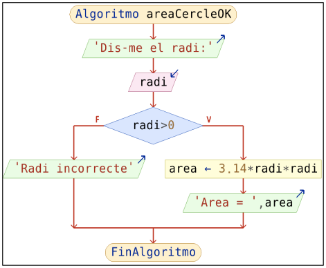
Amb PSeInt podem construir fàcilment este ordinograma a base d'anar posant eixes "caixetes". També podrem executar-lo.
PSeInt també permet convertir un ordinograma a pseudocodi (o un pseudocodi a ordinograma). I també podem exportar l'algorisme a un fitxer en Python a altre llenguatge.
2.4. Qualitat d'un algorisme
Per a resoldre un problema determinat hi pot haver infinitat d'algorismes. La qualitat d'un algorisme depén de:
- Correctesa: l'algorisme ha de produir el resultat correcte per a tots els inputs possibles.
- Eficiència: cal minimitzar els recursos de temps i memòria. Sobretot per a dades d'entrada "grans".
- Senzillesa: l'algorisme ha de ser el més senzill possible, sempre que siga fàcil d'entendre i modificar.
Estes qualitats ajuden a assegurar que un algorisme no només resol el problema plantejat, sinó que també ho fa de manera fiable, eficient i clara.
3. Elements d'un algorisme
Els elements d'un algorisme són un conjunt d'instruccions, de diferents tipus:
- Instruccions d'entrada i d'eixida: per a interaccionar amb l'usuari (introduir dades al programa o que aquest mostre resultats).
- Instruccions d'assignació: per a decidir si s'executen un conjunt d'instruccions o unes altres.
- Instruccions de bifurcació: per a decidir si s'executen un conjunt d'instruccions o unes altres.
- Instruccions de repetició: per a repetir un conjunt d'instruccions.
Anem a vore en detall en què consisteix cadascuna d'aquestes instruccions.
3.1. Instruccions d'entrada i d'eixida
Servixen perquè el programa intercanvie informació amb un medi extern (generalment teclat i pantalla).
- Entrada (o lectura): es demana un valor per teclat (o pel ratolí, o des d'un fitxer o base de dades) per a guardar-lo en una variable (generalment).
- Eixida (o escriptura): es mostra una dada (una constant o el valor d'una variable o el resultat d'una expressió) per pantalla (o per impressora o la deixarà en un fitxer o base de dades...).
Per a vore un exemple d'instruccions d'entrada i d'eixida, veiem com podria ser un algorisme que demane per teclat el radi d'una circumferència i mostre l'àrea corresponent.
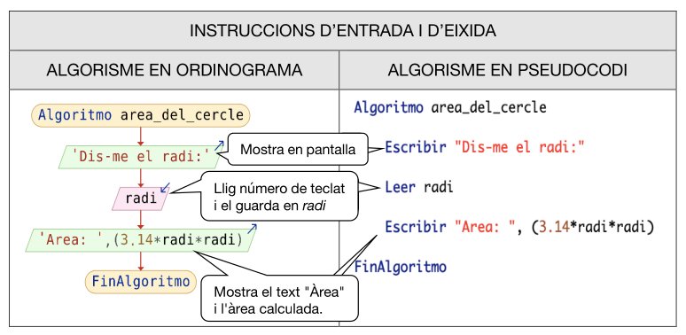
Per iniciar-se en la programació, moltes vegades convé fer ús dels ordinogrames (sobretot quan vejam bifurcacions complexes, etc). Per tant, recomanem l'aplicació del PSeInt per tal de comprovar si l'algorisme funciona.
Ara bé, si volem fer l'algorisme en pseudocodi, quasi que és millor fer-ho ja en un llenguatge de programació que s'utilitze (no té sentit aprendre la sintaxi del PSeInt).
Per tant, anirem veient els distints elements en ordinograma i en Python.
Veiem com podria ser la implementació en Python d'este algorisme que hem vist:
| Python | |
|---|---|
- Mostra la pantalla
- Llig text, els converteix a enter i el guarda en la variable 'radi'
- Mostra el text "Area" i el resultat del càlcul
Una altra forma:
| Python | |
|---|---|
- Importem la llibreria per a usar un valor de pi més aproximat
- Mostra text, llig valor per teclat, el converteix a enter i el guarda en 'radi'
- Mostra el resultat. En Python la potència es fa amb **
Nota
- Per fer un ordinograma i poder-lo provar podem usar PSeInt:
- Per a programar en local en Python:
- THONNY
- Es tracta d'un IDE molt senzill per a programar en Python. Ve integrat amb ell el propi Python i amb una única instal·lació podem començar a crear els nostres primers programes. Recomanat!
- THONNY
Al tema següent ja vorem altres alternatives com VSCode.
Exercici 1. Instruccions d'entrada i d'eixida
Demana 2 números per teclat i mostra la seua suma, resta, multipliació i dividisió. Fes-ho de dues maneres: ordinograma (PSeInt) i en Python (OnlineGDB).
3.2. Instruccions d'assignació
Una assignació consisteix en guardar un valor en una variable.

En la primera instrucció de l'exemple anterior, està posant el valor 5 dins de la variable nota1. En la segona instrucció posa un 7 en la variable nota2. I en la tercera, suma les dos variables, les divideix entre 2 i el resultat el posa dins de la variable notaMitja.
És a dir, una assignació consta de 2 parts separades per un operador d'assignació. Sol emprar-se l'operador "=" (en PSeInt és una fletxa cap a l'esquerra: "<-"):
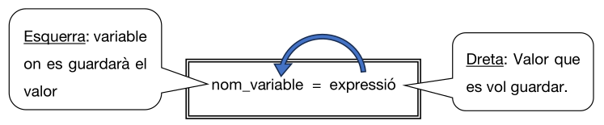
Cal tindre en compte que les assignacions NO són equacions matemàtiques.
Exemple
x = x + 1 no t'e sentit com a equació però sí com a instrucció en un algorisme. És el que anomenem un increment de la variable. En eixa instrucció se li assigna a la variable numèrica x un valor que correspon al valor que tenia abans eixa variable més una unitat.
Exercici 2. Instruccions d'assignació
Fes l'algorisme amb un ordinograma o amb Python per a calcular el sou d'un treballador:
- Demana per teclat el nom del treballador, la quantitat d'hores que ha treballat i el preu per hora que paga l'empresa.
- Cal tenir en compte que la retenció aplicada és del 15%.
- Calcula el sou brut (import que paga l'empresa), l'import retingut (import que s'emporta hisenda) i el sou net (import que s'emporta el treballador).
- Mostra per pantalla el nom del treballador i les dades calculades abans.
3.3. Instruccions de bifurcació
Les instruccions de bifurcació (o selecció) serveixen per a quan volem executar un conjunt d'ordres només si es compleix alguna condició determinada.
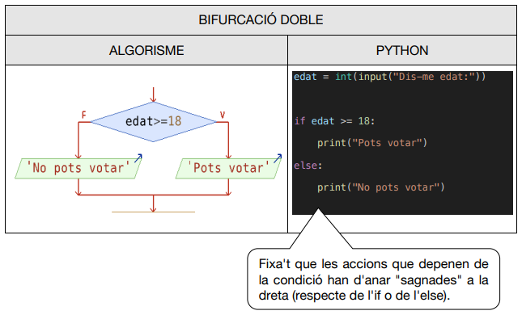
En l'ordinograma podem no posar res en alguna de les 2 branques. En Python és opcional la part del else:
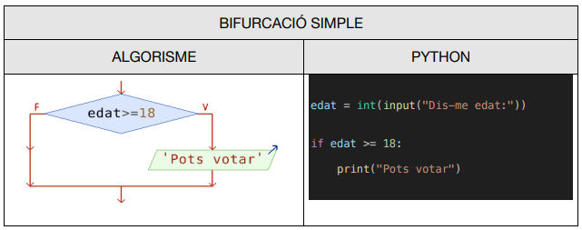
També podem posar instruccions de bifurcació dins d'altres. És a dir: una estructura if dins d'un altre if, o dins d'un altre else.
Exercici 3 RESOLT. Instruccions de bifurcació
Fes un programa en Python que calcule l'àrea d'un rectangle o que mostre un missatge d'error si algun costat no és positiu.
Exercici 4 RESOLT
Fes un algorisme que llisca 2 números i que mostre quin és el major; o bé, si és el cas, que diga que són iguals. Fixa't que hi ha un if-else dins d'un else.
Exercici 5
Fes un programa en Python per a llegir un número de teclat i dir si és parell. No s'ha de dir res en cas contrari.
Exercici 6
Demanar un número i dir si és parell o imparell.
Exercici 7
Donats dos números, calcular quin és el més gran.
Exercici 8
Donats 3 números, calcular quin és el més gran.
Exercici 9
Donats 3 números, calcular quin és el més gran i el més menut.
Exercici 10
Donats 3 números, calcular quins són els dos més menuts.
Exercici 11
Donats 3 números, comprova si poden correspondre a les mesures dels costats d'un triangle.
PISTA: La suma dels dos més menuts ha de ser major que el gran.
Exercici 12
Transformar una nota numèrica a la forma: Molt deficient, Insuficient, Suficient, Bé, Notable, Excel·lent. També cal mostrar error si la nota és negativa o >10.
Exercici 13
Llegir dos números de teclat i una lletra, que serà el codi d'operació (Suma, Resta, Multiplicació o Divisió). Caldrà mostrar el resultat de l'operació demanada. Si no s'ha introduït un codi d'operació correcte, cal mostrar un error.
3.3.1. Instruccions de bifurcació múltiple
En la bifurcació doble, el programa executava un bloc d'instruccions d'entre 2 possibles, depenent del vaor d'una condició. Amb una instrucció de bifurcació múltiple, el programa executarà un bloc d'entre molts possibles, depenent del valor d'una variable (o expressió) entrea (o de tipus caràcter).

A l'exemple, si el valor numEstacio és 1, s'executarà la instrucció (o conjunt d'instruccions) corresponent. Si fóra 2, les instruccions del 2, etc. I si no fóra ni 1, ni 2, ni 3 , ni 4, s'executaria el bloc d'instruccions de l'apartat De Otro Modo.
Ara bé: la bifurcació múltiple de Python no té eixa estructura. En compte de triar el bloc d'instruccions a executar segons el valor d'una sola variable (o expressió), en Python cada bloc d'instruccions té la seua condició per a poder executar-se.
Java sí que té una estructura semblant a la del PSeInt (anomenada switch) però ja la veurem més endavant. Veiem ara com implementar la bifurcació múltiple en Python.
En Python s'utilitza l'estructura if-elif-else, que és com si tinguérem dins d'un else una estructura if-else. I dins d'eixe else, una altra estructura if-else, etc.

Fixeu-vos que:
- Un elif ve a ser la contracció de el(se)+if, amb l'avantatge que no has d'anar sagnant cap a la dreta en cada condició (i no ocupa tantes línies).
- Esta estructura de Pyhton anirà per un camí o per altre depenent de les diverses condicions que li anem posant. És a dir: es podrien posar condicions diferents en cada elif. Mentre que en el según del PSeInt, anirà per un camí o per altre depenent dels valors d'una sola variable o expressió.
Exercici 14. Instruccions de bifurcació múltiple
Fes un programa en Python usant elif per a llegir de teclat un número de l'1 al 7 i mostrar el nom corresponent al dia de la setmana (dilluns, dimarts...):
3.4. Instruccions de repetició
Amb les estructures de repetició podrem fer que un grup de sentències s'execute diverses vegades. Quantes?
- mentre es complisca una condició: repeticions condicionals.
- una determinada quantitat de vegades: repeticions incondicionals.
3.4.1. Repetició condicional WHILE
Amb l'estructura while posarem en un bloc aquelles instruccions que volem que s'executen repetidament mentre es complisca una determinada condició.
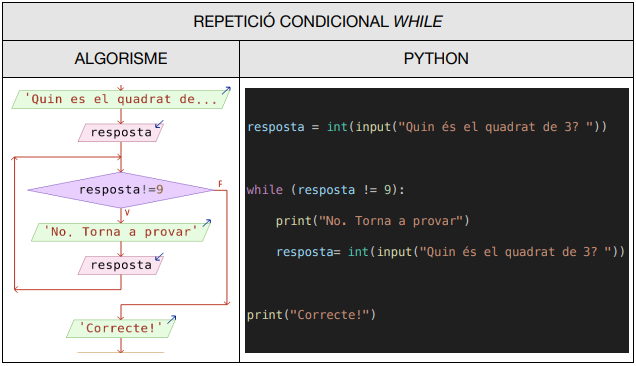
Exercici 15. Instruccions de repeticions condicionals while
Fes un programa en Python que, donat el radi, calcule l'àrea del cercle, però demanant repetidament el radi fins que l'usuari ens done un radi positiu.
Exercici 16
Demana any de naixement i de defunció d'una persona. Caldrà demanar-ho repetidament fins que siguen dades coherents (l'any de defunció no pot ser anterior al de naixement). Després, mostra quants anys ha viscut.
3.4.2. Repetició condicional FINS (no en Python)
Amb l'estructura algorísmica FINS, posarem en un bloc aquelles instruccions que volem que s'executen repetidament fins que es complisca una determinada condició.
És paregut al bucle MENTRE (while) però amb 2 diferències:
Exemple de repetició condicional FINS
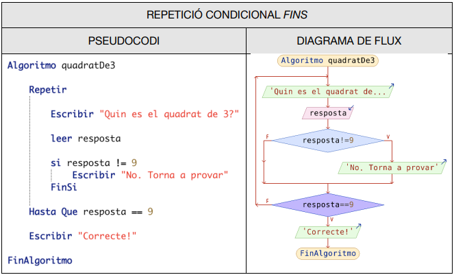
Veiem que hi ha 2 diferències entre un MENTRE i un FINS. En un bucle FINS:
- Sempre s'entra al bucle almenys 1 vegada, ja que la condició està al final del bucle.
- La condició és just la contrària que MENTRE, ja que no hem de posar la condició per a continuar en el bucle, sinó la condició per a eixir d'ell. No és el mateix dir "Mentre (no em donen la paga, la demanaré)" que "Repeteix demanar la paga fins que (sí que em donen la paga)".
Python no té esta estructura de posar la condició al final del bucle (no al principi), però podem simular eixe comportament (i Java té el do-while, que és una cosa intermitja entre un MENTRE i un FINS):

En Python veiem que tenim un bucle infinit (en principi) ja que hem posat un while true. Però després, podem eixir del bucle a la força amb el break.
En canvi, en Java vorem que tenim l'estructura do-while, que és pareguda al FINS del PSeInt perquè la condició està al final però es diferencia en que la condició que posem és per a continuar en el bucle, no per a eixir.
Com sabem si cal usar la condició al principi o bé usar el while true i el break? Per regla general, si és una condició senzilla, cal posar la condició al principi. Si usem el while true i no posem els break que toquen, podriem provocar un bucle infinit.
Exercici 16 amb while-true i break
Demana any de naixement i de defunció d'una persona. Caldrà demanar-ho repetidament fins que siguen dades coherents (l'any de defunció no pot ser anterior al de naixement). Després, mostra quants anys ha viscut.
3.4.3. Repetició incondicional FOR
Amb l'estructura PER_A (para en castellà i for als llenguatges de programació), podrem repetir un bloc una quantitat de voltes determinada. Per exemple, si volem que un bloc d'instruccions s'execute 5 vegades, ho farem en una estructura (for) amb ajuda d'una variable que anirà agafant els valors del 0 al 4 (o de l'1 al 5, etc).
Exemple
Volem mostrar 5 vegades "Hola, món!"

Exemple
Mostrar els números que hi ha entre el 100 i el 200, de 3 en 3.
Més endavant entrarem en detall en distints tipus de for que té Python. De moment, veiem alguns exemples dels valors que tindrà la i en funció del range:
range(10) --> [0, 1, 2, 3, 4, 5, 6, 7, 8, 9]range(4, 10) --> [4, 5, 6, 7, 8, 9]range(4, 10, 2) --> [4, 6, 8]range(10, 1, -1) --> [10, 9, 8, 7, 6, 5, 4, 3, 2]
Exercici 17. Instruccions de repeticions incondicionals
Demanar per teclat quants números es volen mostrar. A continuació, es mostraran els números des d'eixe número fins a l'1 (en eixe ordre).
Exercici 18
Demanar un valor inicial i un valor final. Caldrà mostrar els valors que hi ha entre ells però de 3 en 3. El valor inicial pot ser major que el final.
Exemples:
vi = 10 vf = 20---> Mostrarà: 10, 13, 16, 19vi = 20 vf = 10---> Mostrarà: 20, 17, 14, 11
Exercici 19
Imprimeix la taula de multiplicar del 9.
4. Comptadors, acumuladors i interruptors
De vegades, les variable s'utilitzen per a unes finalitats concretes. Anem a vore quines són eixes finalitats i com tractar eixes variables.
4.1. Comptadors
Un comptador és una variable destinada a comptar quantes vegades ocorre alguna cosa. Sol emprar-se en els bucles (de qualsevol tipus: while o for). L'ús del comptador té 2 instruccions bàsiques i sol ser així:
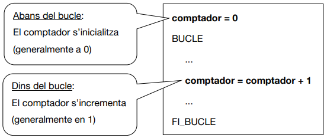
Exemple d'ús de comptadors
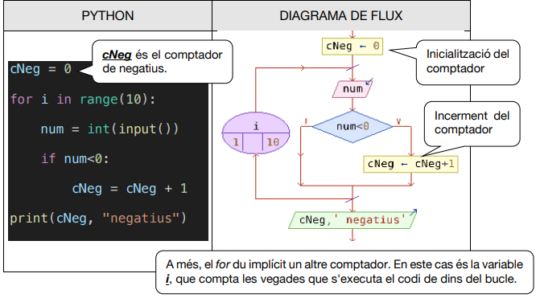
Exercici 21. Ús de comptadors
Indica quants divisors (no quins) té un número donat.
Exercici 22
Pregunta quina és l'arrel quadrada de 225 fins que siga encertat. Finalment, mostra quants intents s'han fet.
Exercici 23
Imprimix quants números hi ha entre 1 i 100 que són múltiples de 2, quants múltiples de 3 i quants múltiples de 2 i de 3 al mateix temps.
Exercici 24
Llig uns quants números (fins que posem 0). Mostra quants positius, quants negatius i quants acaben en 0.
Exercici 25 RESOLT
Fes un programa que donat un número, calcule quants dígits té.
| Python | |
|---|---|
- inicialització del comptador
- Increment
- S'ha emprat l'operador // que torna sols la part sencera de la divisió
4.2. Acumuladors
Un acumulador és una variable destinada a acumular diferents quantitats.
Un acumulador és com un comptador però en compte de sumar 1, sumarem diferents quantitats (no volem comptar sinó acumular quantitats).
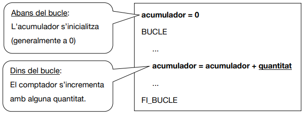
Exemple d'acumulador
Volem acumular l'import d'una factura:
| Python | |
|---|---|
- inicialització de l'acumulador
- Increment
Exercici 26. Ús d'acumuladors
Demana quantitats fins que s'introduïsca la quantitat 0. Cadrà mostrar la suma de totes les quantitats.
Exercici 27
Demana les notes dels 23 alumnes de la classe. Mostra la nota mitjana.
Exercici 28
Mostra els números naturals que hi ha entre dos números introduïts per teclat i calcula la suma dels parells i la dels imparells. Per últim, mostra els dos totals.
Exercici 29
Introdueix 2 valors A i B (A < B). Incrementa A de 2 en 2 i decrementa B de 3 en 3 fins que A > B.
Exercici 30
Demana 2 números per teclat i mostra la multiplicació dels dos... però sense usar l'perador de la multiplicació (*). És a dir: hauràs de sumar un dels dos números tantes vegades com diu l'altre número.
4.2.1. Acumuladors de productes
Generalment, la quantitat va sumant-se a l'acumulador, però també podria multiplicar-se. Cal tindre en compte això per a iniciar l'acumulador:
- Si volem sumar quantitats, el
valor_inicialsol ser 0. - Si volem multiplicar quanitats, el
valor_inicialsol ser 1.
Exercici 31 RESOLT
Donats 2 números (base i exp) calcula la potència (baseexp). Se suposa que la potència no és un operador ni cap funció predefinida.
| Python | |
|---|---|
- Si inicialitzàrem a 0, el producte sempre donaria 0.
- Acumulem el producte
Exercici 32. Acumuladors de productes
Mostra el producte de tots els números imparells entre l'1 i el 40.
Exercici 33
Mostra la suma, el producte i la mitjana dels 100 primers números naturals.
Exercici 34
Calcula el factorial d'un número introduït per teclat.
4.3. Interruptors
Els interruptors (també coneguts com indicadors, banderes o flags) són variables destinades a indicar si en alguna de les iteracions d'un bucle ha passat o no una cosa determinada.
Estes variables seran de tipus lògic (booleà) ja que només guardaran 2 possibles valors: ha passat alguna cosa (vertader) o no (fals). En Python, estos valors són True i False (en PSeInt són Verdadero i Falso). Ja vorem que en Java són true i false (en minúscula).
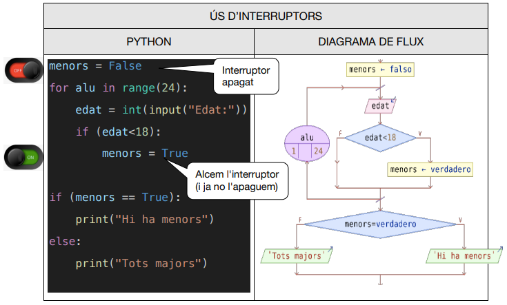
Però si un llenguatge no admetera el tipus booleà (com el llenguatge C), podríem usar una variable de tipus enter (per exemple usant els valors 0 i 1) o de tipus caràcter (per exemple emprant els valors "V" i "F", o bé, "S" i "N", etc).
Exercici 35. Ús d'interruptors
Demana un número per teclat i digues si és un número primer o no. Un número és primer si només té 2 divisors (per ell mateix i per 1, clar).
5. Alguns algorismes bàsics
5.1. Obtindre el major d'una llista de números
Imaginem que (sense cap ordinador), vull anar preguntant l'edat de tot l'alumnat per a poder saber l'edat màxima. Com ho faria? No he de recordar l'edat de tots, sinó que només necessite saber en cada moment l'edat de l'alumne actual i l'edat màxima obtinguda fins eixe moment (que hauré d'anar canviant o no).
Per tant, necessite 2 variables: edat (per a guardar l'edat de l'alumne "actual") i maxima (per a guardar l'edat màxima fins a eixe moment). L'algorisme seria:
Algorisme
- Inicialitzar maxima a un valor molt xicotet. En el cas de les edats ens serviria el 0, ja que cap alumne pot tindre menys de 0 anys.
- Per cada alumne del bucle faria:
- Demanar l'edat de l'alumne (la guarde sempre a la variable edat).
- Si eixa edat és major que la que tinc en maxima, canvie el valor de maxima a eixa edat.
Ara bé: i si no foren edats? És a dir: imaginem que volem calcular el número màxim d'una llista de números però que també podrien ser negatius. Fins i tot, tots els números podrien ser negatius. En eixe cas no ens serviria inicialitzar el valor de la variable maxima a 0, sinó que hauríem d'assignar-li un valor que siga més xicotet que tots els que puguen estar en la llista.
En eixe cas tenim 2 opcions per a trobar el valor inicial de la variable maxima:
- El valor més xicotet que admet eixe tipus de dades en eixe llenguatge. Per exemple, el menor enter en Java seria Integer.MIN_VALUE. Compte! Python no té límit en la grandària dels enters.
- El primer valor de la llista de números.
Per tant, si volem obtindre el màxima de 100 valors usant l'opció (2), al principi de l'algorisme direm que el màxim és el primer d'eixos valors. Després llegirem en un bucle els altres 99 números i, com abans, anirem canviant, si cal, el valor màxim:
| Python | |
|---|---|
Exercici 36. Càlcul del major
Llig uns quants números (fins que posem 0). Mostra el major i el menor.
5.2. Bucles niuats
Podem posar un bucle (o més) dins d'un altre.
Per exemple, si volem obtindre de teclat un número imparell, cal un bucle per a demanar contínuament el número fins que siga imparell. Però si volem demanar 4 números imparells, haurem de posar el bucle anterior dins d'un altre bucle:
Bucles niuats
| Python | |
|---|---|
NOTA: recorda que l'operador % calcula el residu de la divisió entera, tant en PSeInt, Python i Java (encara que PSeInt tabé admet l'operador mod).
Exercici 36.quadrat
Dibuixa un quadrat de caràcters x, de grandària n (demanada per teclat). Per exemple, si n és 4, cal dibuixar:
| Python | |
|---|---|
Exercici 36.triangle
Dibuixa un triangle de caràcters x d'altura n (demanada per teclat). Per exemple, si n és 4:
Exercici 36.triangle2
Dibuixa un triangle de x d'altura n (demanada per teclat). Per exemple, si n és 4:
Exercici 36.rectangle
Dibuixa un rectangle de x de grandària alt per ample (dades demanades per teclat). Per exemple, si és 4 d'alt per 7 d'ample, dibuixarem:
Exercici 36.rectangleBuit
Igual que el 36.4, però ara el triangle ha d'estar buit:
Exercici 37
Mostra les taules de multiplicar del 2 al 9.
PISTA: ja havies fet, amb un bucle, una taula de multiplicar. Ara es tracta de posar eixe trós de codi dins d'un altre bucle, ja que volem motes taules.
Exercici 37.1
Demana un número per teclat (n) i mostra per pantalla les següents línies:
Exercici 37.2
Mostra els primers 15 números primers. Els resultat ha de ser:
NOTA: L'1 no és primer, per definició.
6. Exercicis
Exercici 38
En un pàrquing es paga 2€ l'hora completa. I per als minuts restants, es paga 4 cèntims per minut, però no pot excedir el preu d'una hora. Calcula què li toca pagar a un conductor per un determinat temps, donat en minuts.
NOTA: es poden eliminar els decimals amb la funció trunc.
Exercici 39
Donat un temps en segons, calcula els segons que falten per a convertir-se en minuts sencers. Per exemple, per a un temps de 70 segons, en faltarien 50.
Exercici 40
Donat un temps en minuts, calcula els dies, hores i minuts que li corresponen.
Exercici 41
Pregunta quina és l'arrel quadrada de 225 fins que siga encertat.
Exercici 42
Càlcul del sou d'un treballador. Pregunta quantes hores ha treballat (a partir de les 40 hores es consideraran extres). Pregunta quin és el preu de l'hora normal (el preu de l'hora extra és un 50% més del preu de l'hora normal). Que cobra el treballador?
Exercici 43
Modifica l'exercici de les hores extres per a obtindre la suma dels salaris de tots els treballadors. Tots la mateixa tarifa. Acabarà quan posem 0 hores treballades.
Exercici 44
Demana N notes d'un estudiant i calcula:
- Quantes notes té suspeses.
- Quantes aprovades.
- La mitjana de les notes.
- La mitjana de les notes aprovades i la mitjana de les suspeses.
Exercici 45
Escriu un algorisme que calcule el total d'una factura d'un article determinat del qual s'adquirixen N unitats a un preu P. L'IVA és el 21%. Si l'import a pagar (amb IVA) és superior a 300€, s'aplicarà un descompte del 5%.
Exercici 46
Modifica l'exercici de la factura per a demanar moltes voltes el preu i la quantitat de diferents articles. Si les unitats introduïdes són 0, vol dir que no es demanaran més articles. El possible descompte, s'aplicarà al final de la factura.
Exercici 47
Algorisme que vaja demanant lletres des de teclat i que pare quan es trobe amb una vocal. Cal escriure esta vocal.
Exercici 48
Mostra els números entre 100 i 200 que són múltiples de 3 però que no son múltiples de 2.
Exercici 49
Mostra tots els divisors d'un número donat, Utilitzant l'operador mod.
Exercici 50
Demana per teclat la quantitat del números que vol introduir l'usuari. A continuació, llig de teclat eixa quantitat de números i digues de cadascun si és parell i positiu al mateix temps.
Exercici 51
Imprimix la taula de multiplicar d'un número introduït per teclat.
Exercici 52
Dir si un número de 3 xifres és o no d'Armstrong (si és igual a la suma dels seus dígits al cub, per exemple: 153 = 1³ + 5³ + 3³). Si no ho és, torna-ho a intentar per a més números.
Exercici 53
Algorisme que mostre tots els números d'Armstrong de l'1 al 1000.
Exercici 54
Comprova si un número donat és perfecte.
NOTA: es diu que un número és perfecte si és igual a la suma dels seus divisors excepte ell mateix.
Exercici 55
Mostra els números primers menors de 100.